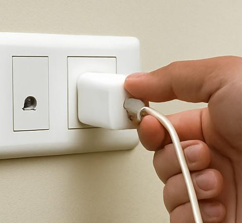
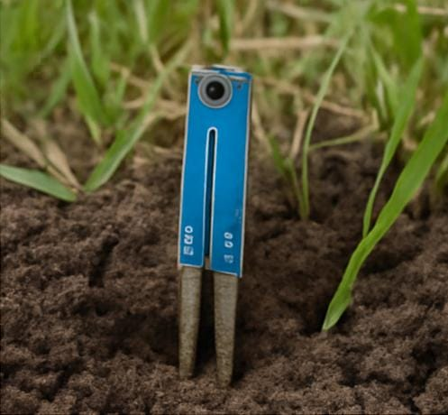
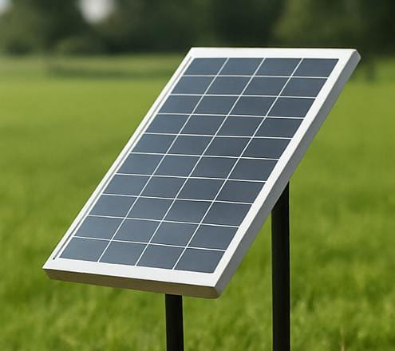

Animal Detector for Farmers
Instruction Manual
Step 1: Connect the Power Supply
Plug in the charger into a power socket to start the system or you can use the solar power invertor also.

Step 2: Insert Soil Moisture Sensor
Place the soil moisture sensor into the soil to monitor moisture levels in the soli.

Step 3: Set Up Solar Panel
Position the solar panel under direct sunlight to ensure power backup.

Step 4: Assemble the Motion Sensor
Mount the motion sensor at the entry point where animals usually come in. It will detect motion and alert when an animal is detected.

Step 5: Install the Gas Sensor
Place the gas sensor in the farm or kitchen or near equipment to detect harmful gases and prevent fire risks.

Step 6: Test the System Sensor
Walk infront of the sensor to simulate an animal entering. confirm that the buzzer is triggered correctly. Make adjustments if needed.